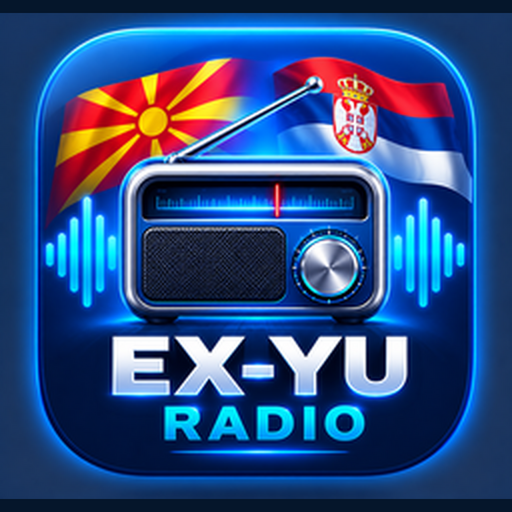

✨ Dostupna je nova verzija EX-YU Radio!
MUZIKA BEZ GRANICA
Tvoj radio.
Tvoja muzika.
Od Skoplja i Beograda do Sarajeva, Zagreba, Ljubljane, Podgorice i Berlina.

♪ UVEK UZ TEBEOTKRIJ MUZIKU
Sve radio-stanice ...
Učitavamo radio-stanice...
LIVE RADIO👥 Online
Tražimo tvoje stanice...
Sačekaj trenutak.